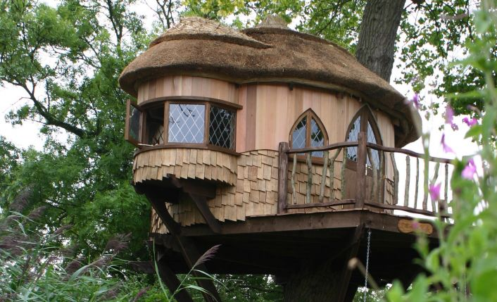
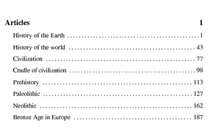

Happy Hippie Lifestyle Projects
Custom Fish Tank
- Made from Clear PVC Pipe with welded Bottom Cap
- Dimensions: 12” dia by 6.5’ tall
- Volume: 35 gallons
- tap fittings into pipe walls for filter inlet/outlet
- Injection port on pump effluent for feeding and air bubbles
- Integral water heater
- Stored on top of tank to prevent leaks
Tree House

Books to publish from Wikipedia

Backpacking Gear To Make
- Chameleon Tent: Hammock - Bivy - all purpose tent
- Bridge hammock (as opposed to gathered-ends hammock) because:
- I can’t seem how to figure out how to sleep comfortably on the diagonal in a gathered-ends hammock, and my legs stick out when at an angle * I don’t want to buy a underquilt (double-layer bottom makes a sleeve for an air pad!) * I don’t care about weight or needing poles or the increased hanging distance
- Similar to Eureka Solitaire, with hoop ends and able to pitch on the ground
- Start with a kit hammock, add no-seeum netting
- Rain flap like this
- Lots of these on Amazon these days but they all look cheap and short
- Daisy chain for easy hanging
- Fold-up wood burning grill with blower
- Like this but with the option of attaching a blower
- stamp or cut myself and add disk vents and CPU fan?
- Wide enough on top to use a wok
- Pressure cooker, to use less energy and time to cook light-weight foods like dried veggies and mushrooms, beans and rice, etc
Wishing Well Grill
- Historical Design: Schwenker
- Uses
- Wood grill
- Smoker
- Maple sap boiler
- Pizza / bread oven
- Griddle
- Wok
- Construction for Permanent model
- Refractory brick on inside
- Red brick on outside
- Filled 50% with sand (for luao) or gravel
- Air-tight door
- Winch
- Mobile version
Birdhouse Cam
- Use off-the-shelf color wireless camera
- Solar panel and latern battery for power
- Retransmit signal via power line ethernet
- board lens and IR leds for night vision
- remote A/V switch or multiple input PCI card
Glamping/Gypsy/Travellers
- Teardrop trailer
- Yurt
- Campaign furniture:
- Trestle table
- Marcy field cots
- Oil lamps
- Cube mini woodstove
- Mobile schwenker grill
- C-head
- Knockdown ADK chairs
- Inflatable hot tub
- Dry-laid masonry oven
- Propane appliances
- Fridge
- Hot water heater
- Griddle
- Lamps
- Water heating coil for the fire